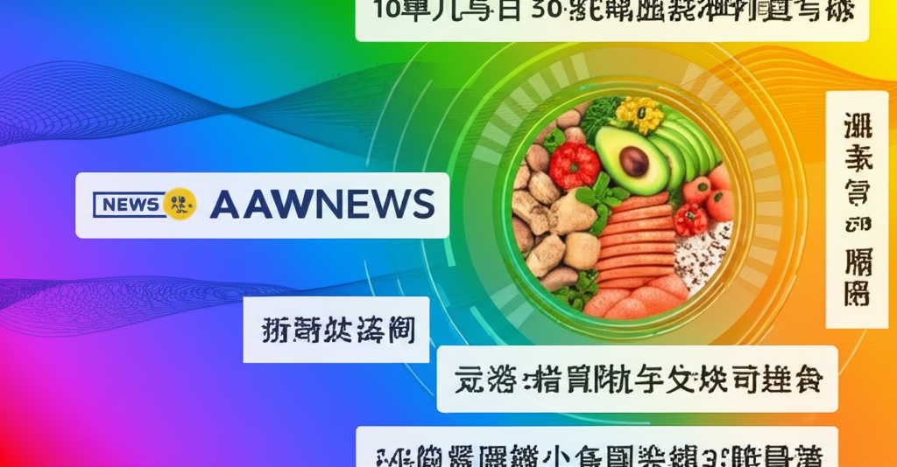

這份新聞摘要涵蓋了來自不同來源的資訊，包括科技新聞、健康飲食、企業動態以及重要人事異動。從中我們可以觀察到當前社會關注的焦點，例如科技產品的發展趨勢、個人健康管理的重要性，以及企業在全球經濟中的戰略部署。以下將針對幾個重點新聞進行更深入的分析。
自由電子報的 3C 科技新聞提到蘋果 iPhone 16 的相關消息，顯示消費者對於新款手機的創新功能抱持高度期待。此外，也有關於摺疊 iPhone 可能在 2026 年上市的預測。這表明科技產業持續追求創新，並探索新的產品形態，以滿足不斷變化的市場需求。
多則新聞都聚焦在健康與飲食方面。Yahoo 新聞提到餐費 100 元可以吃的健康選擇，反映了民眾對於經濟實惠又健康的飲食方式的關注。另有新聞報導廚師透過攝取特定油脂成功減重，以及總鋪師因糖尿病體重下降的案例，突顯了體重管理和健康飲食的重要性。企業健走活動的推廣，也反映了企業對於員工健康的重視，以及體重管理與 BMI 控制的相關議題。
台灣英特爾與艾斯摩爾的人事異動是半導體產業的重要新聞。這顯示了跨國公司在台灣市場的戰略調整，以及對本地人才的重視。半導體產業是台灣經濟的支柱，相關的人事變動往往牽動整個產業的發展方向。
從以上的新聞摘要中，我們可以觀察到科技創新、健康意識和產業變動是當前社會關注的重點。科技產業不斷追求突破，為消費者帶來更多便利；健康議題持續受到重視，人們越來越關注飲食與運動對於健康的影響；而半導體產業作為台灣經濟的重要引擎，其動態變化也備受關注。這些新聞反映了當前社會的發展趨勢，以及人們對於未來的期許。